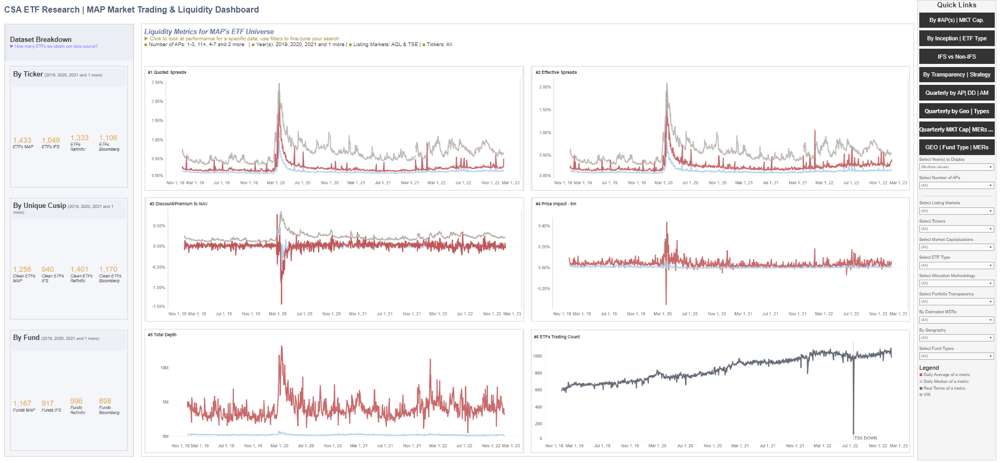

<!DOCTYPE html>
<html lang="en">

<meta charset="utf-8">

<title>jaenmarcos.com</title>

<link rel="stylesheet" href="../../style/page.css">
<style>

svg .axis path,
svg .axis line {
	fill:				none;
	stroke:				black;
	shape-rendering:	crispEdges;
}

svg .axis text {
	font-family:		helvetica,sans serif;
	font-size:			0.6rem;
	font-weight:		100;
}

svg text {
	font-family:		helvetica,sans serif;
	font-size:			0.8rem;
	font-weight:		100;
}

svg .line {
	fill:				none;
	stroke:				slategray;
	stroke-width:		1px;
}

svg .fairline {
	fill:				none;
	stroke:				dodgerblue;
	opacity:			0.4;
	stroke-width:		1px;
}

svg .vwapline {
	fill:				none;
	stroke:				chocolate;
	stroke-width:		1px;
}


	
<script src="../../script/page.js"></script>
<script src="../../lib/d3.min.js"></script>
<script src="../../script/g3.js"></script>

<body onload="setNav(); plot()">


<header style="text-align: center;">
Creating a Dataset for Comprehensive Market Research and Surveillance
</header>

<nav>
<ul>
<li><a href="../../../index.html">Home</a></li>
<li><a href="index.html">Back</a></li>
<li><a href="#" onclick="onNavClick()">Calculate</a></li>
</ul>
<form id="nav-form">
<input id="nav-input" type="text" maxlength="80" onchange="onNavInput()" style="visibility:hidden;">
<div id="nav-div"></div>
</form>
</nav>

<article>

<p>One of the positive spillover effects of creating a general-purpose q library for my employer, in addition to empowering and enabling developers and data scientists across the organization to use KDB+ without needing extensive knowledge of Q, is its assistance in productionizing data pipelines I have previously created for past research efforts.</p>

<p>The dashboard shown below, which I developed to share trading metrics and characteristics of Canada's ETF universe with a wide audience, serves as an example. It contains daily intraday liquidity metrics and market data, with over 200 columns, for the entire universe of Canadian-listed ETFs, which encompass more than 20% of the market in terms of tickers. By extending this concept to the entire universe of Canadian-listed equities, I aim to create a dataset for comprehensive market-wide surveillance and research. My organization would like to publish some derivative of the dashboard below to the public to promote transparency in the public markets.</p>

</article>
	
<article>
  <table>
    <tr>
      <td style="width:100%; vertical-align: middle;">
	<h1 style="color:skyblue;">Trading and Liquidity Dashboard for ETFs</h1>
	
	<figcaption>Image 1: Time series of main liquidity metrics for the Canadian ETF market from January 1, 2019, to December 31, 2022. The original dashboard contains over 100 sheets and is interactive, allowing users to view various data cuts. It is connected to many other dashboards to provide a comprehensive view of the market. For confidentiality reasons, only an image is included here.</figcaption>
      </td>
    </tr>
  </table>
</article>

<article>
	
<p>Connecting to this dashboard will allow anyone to visualize and understand market activities in an accessible manner. Additionally, this pipeline, like my ETF pipeline, will integrate third-party sources beyond exchange market data to enrich the information with qualitative data points, such as dates of mergers and acquisitions, ownership changes, and more. I plan to host and automate the process in Azure to ensure up-to-date information.</p>

</article>

<footer>
<ul>
<li>www.jaenmarcos.com</li>
<li>First published 2024.06.02</li>
<li>Last revised 2024.06.02</li>
</ul>
</footer>


</body>

</html>

